Evènement de consultation
La consultation médicale dans MIA Experts est conçue comme un espace structuré permettant de documenter le raisonnement clinique, de centraliser les informations médicales du patient et de préparer les suites de la prise en charge
Entête et colonne latérale de la consultation
L'en-tête présente sur l'évènement de consultation permet de visualiser en un coup d'œil les informations essentielles du patient : son identité, son âge, sa date de naissance et le motif de consultation. Il permet également d'ajouter une note, accessible à plusieurs endroits du logiciel.
Sur la droite, des actions rapides sont disponibles : la facturation, l'activation de l'écoute lors de l'échange, ainsi que la réinitialisation de la saisie médicale si nécessaire.
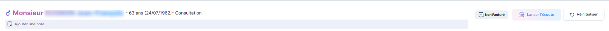
La colonne latérale gauche affiche en permanence les éléments clés du dossier patient :
- biométrie,
- pathologies,
- données physiques,
- antécédents médicaux et chirurgicaux,
- allergies,
- traitements en cours
Cette vue permet au praticien de disposer des informations essentielles sans avoir à quitter l’écran de consultation.
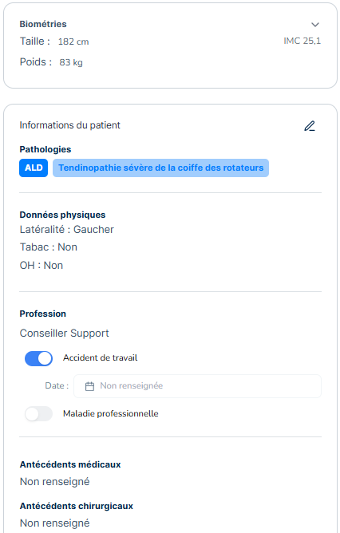
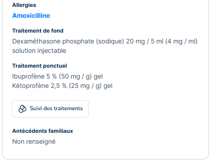
Les informations peuvent être ajoutées manuellement ou par dictée vocale notamment lors d’un évènement de consultation, voir page suivante Synthèse et Conclusion
Synthèse et conclusion
La zone centrale affiche les informations propres à la consultation en cours, notamment la “synthèse” puis la “conclusion et conduire à tenir”.
La zone centrale affiche les informations propres à la consultation en cours, notamment la “synthèse” puis la “conclusion et conduire à tenir”. Cette zone peut être alimentée de 3 façons différentes : par saisie manuelle, par dictée vocale via les boutons dédiés, et par choix d’une “trame de consultation type”.
La synthèse médicale permet de formaliser le raisonnement clinique au cours de la consultation. Elle comprend notamment :
- le motif de la visite,
- l’histoire de la maladie,
- l’examen clinique,
- l'examen paraclinique.
Cette structuration favorise une documentation claire, lisible et homogène des consultations, tout en facilitant la relecture ultérieure du dossier patient.
Le bouton "Lancer l'écoute" active la reconnaissance vocale et permet de capter l'ensemble des éléments communiqués au cours de la consultation, y compris ceux exprimés par le patient. Pour arrêter l'enregistrement, appuyer à nouveau sur le même bouton.
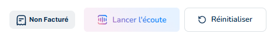
Cliquer ensuite sur l'icône IA (représentée par des étoiles) afin de retranscrire automatiquement les éléments captés dans les différentes sections : la colonne latérale gauche (voir article Entête et colonne latérale de la consultation) ainsi que la synthèse.
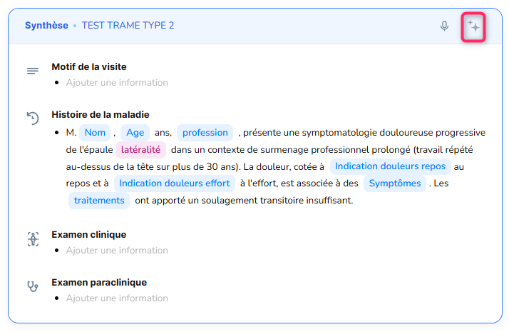
Durant la génération de la synthèse, le praticien a la possibilité d'enrichir le contenu en relançant la reconnaissance vocale directement depuis cette section. La synthèse reste modifiable à tout moment en saisissant directement le texte souhaité.
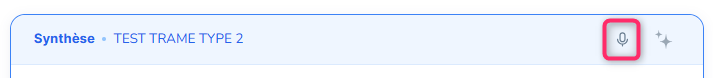
L’option “ trame de consultation type” permet d’appliquer un type de trame configurée au préalable depuis les paramètres (Trame > Trame de consultation), afin de gagner du temps lors de la rédaction de la synthèse.
Pour cela, cliquer sur le modèle de trame approprié au cas du patient parmi celles proposées
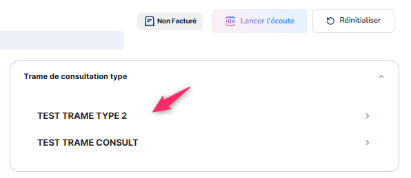
Puis cliquer sur le bouton permettant de copier le modèle sur la synthèse.
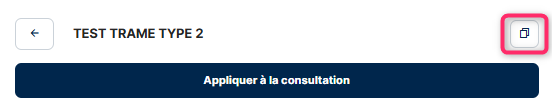
Le bandeau passe alors en : "Appliquée à la consultation”.
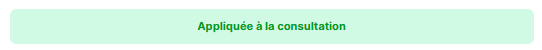
Il ne reste plus qu'à faire la différence sur la synthèse au niveau des variables, soit manuellement en cliquant sur les variables directement, soit par la dictée vocale.
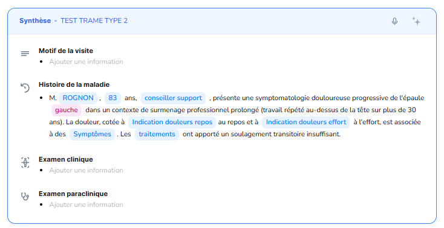
La conclusion de la consultation permet de synthétiser les décisions médicales prises et de définir la conduite à tenir.
Elle ne doit être alimentée qu’une fois la synthèse vérifiée et finalisée.
Par dictée vocale, la conclusion et la conduite à tenir sont générées simultanément en intégrant les aspects administratifs, les documents associés, un nouvel évènement de bloc qui s’ajoutera automatiquement à l’agenda (voir pages suivantes Documents associés Module planification du bloc opératoire)
Elles peuvent inclure :
- les examens complémentaires à réaliser,
- les orientations thérapeutiques,
- les propositions de suivi,
- la décision de programmer une intervention ou un acte spécifique.
Cette section constitue un élément clé de la continuité des soins et sert de référence pour les étapes suivantes du parcours patient.
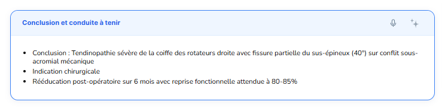
Les informations saisies sont immédiatement intégrées au dossier patient et à la timeline médicale.
Documents associés
Le panneau de droite regroupe les documents associés à la consultation en cours.
Cette zone agit comme un point d’entrée au module documentaire, tout en restant intégrée au contexte clinique de la consultation.
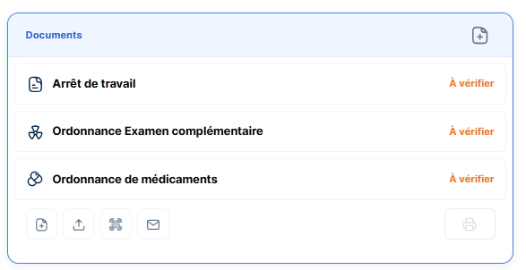
Le logo en haut à droit permet de saisir ou de dicter le document souhaité. Cliquer sur “Générer les documents” pour qu’il apparaisse sur la consultation.

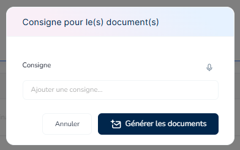
5 icônes en bas du module permettent (de gauche à droite) :
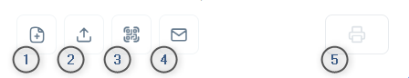
1) L’ajout d’un document supplémentaire type ordonnances, packs ou autre documents administratifs
Cette fonctionnalité permet d’accéder à la liste des documents disponibles et de sélectionner celui à afficher dans l’écran de consultation.
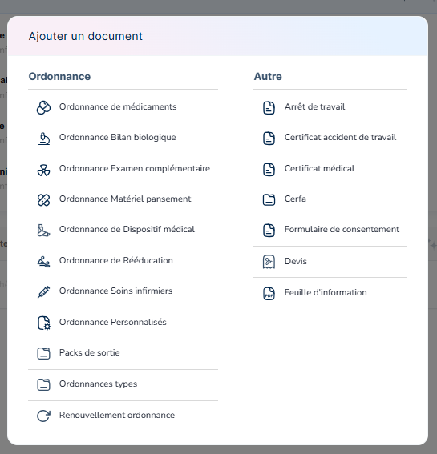
2) L’import d'un document présent sur l’ordinateur
3) L’ajout d'une photo ou vidéo grâce au QR code
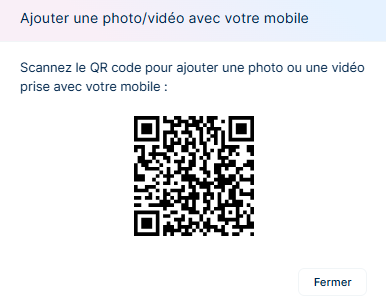
La prise en photo avec un téléphone portable du QR code établit le lien avec le dossier du patient actif. Après avoir validé la photo, cliquer via le bouton “utiliser” l’image est automatiquement rattachée au dossier et apparait à la suite des documents existant au format .jpg
4) La génération d’un courrier destiné à un autre praticien.
Le logiciel permet de rédiger des courriers à partir de modèles existants ou de les générer automatiquement grâce à l’IA. L’utilisateur n’a plus qu'à valider le contenu avant transmission au médecin traitant.
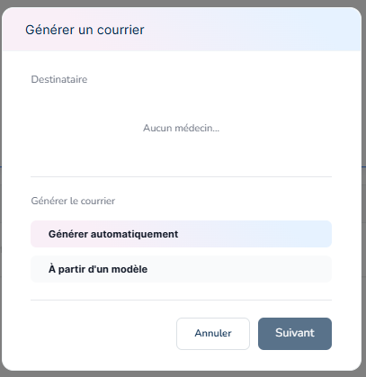
Si aucun médecin traitant n’est rattaché sur la fiche du patient, suivre cette procédure : Menu latéral : Informations patient
5) L’impression de documents.
L’utilisation du bouton permet un choix préalable pour l’impression :
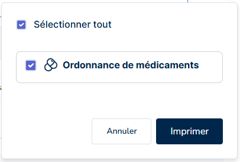
Enfin il vous suffit de relire l'ensemble des documents générés et de les valider.
Pour le détail des documents disponibles : Documents médico-administratifs
Module planification du bloc opératoire
Le module de planification du bloc opératoire se présente sous la forme d’un encart dédié permettant au praticien de créer un événement de bloc opératoire à la date souhaitée, sans quitter le contexte de la consultation en cours.
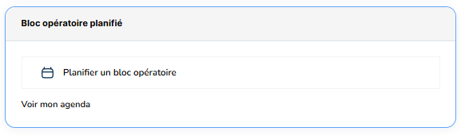
Depuis cet encart, le praticien peut :
- planifier une intervention chirurgicale à une date donnée,
- créer automatiquement un événement de type bloc opératoire dans l’agenda,
- déclencher la génération des documents nécessaires à l’intervention.
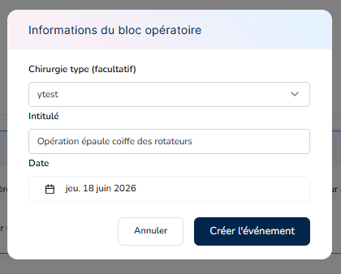
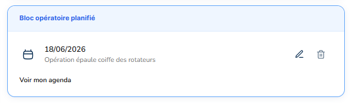
Les documents générés (devis, consentement opératoire, compte-rendu opératoire type, documents d’information, etc.) dépendent des préférences définies par l’utilisateur dans les paramètres de l’application Mes préférences :
- les modèles de documents configurés,
- les procédures chirurgicales associées,
- les packs ou trames prédéfinis.